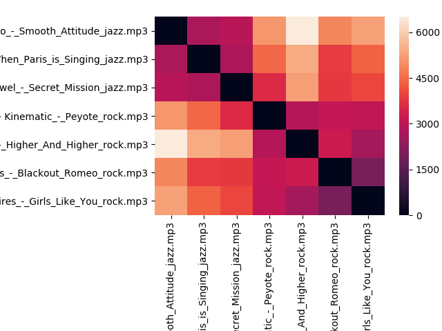

Example with plotting¶
When you have installed mpg123 or ffmpeg for MP3 to WAV transform, you should download this zip and unzip it. Then, run
python test/test_full
This test:
- Load the configuration from
config.ini. - Transform the songs from song/ to a temporary folder.
- Transform each song from WAV to a Fourier series, plot and store it.
- Calculate the distances between songs.
- Cluster them.
Examples of the Fourier series:
Higher and Higher from Scream Inc is a rock song.

Secret mission from Frank Rawel is a jazz song.

The distance matrix can be plot as a heat map, where the dark values means the songs are closer and white means the distances are high.
If you can read the heat map, you already can see there are two groups. These two groups are jazz music and rock music. So we can apply cluster algorithms to the system.